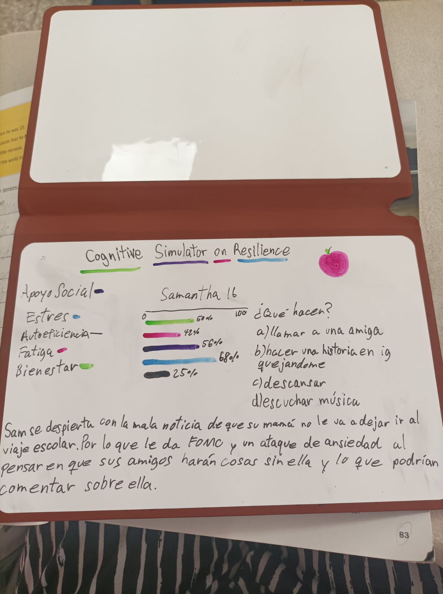
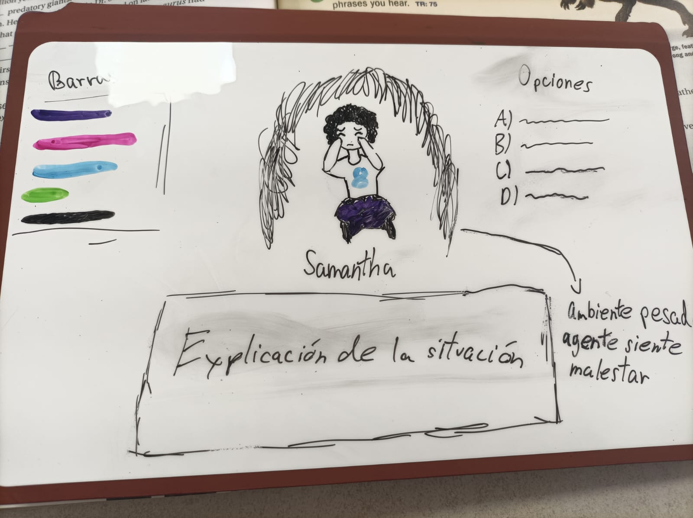
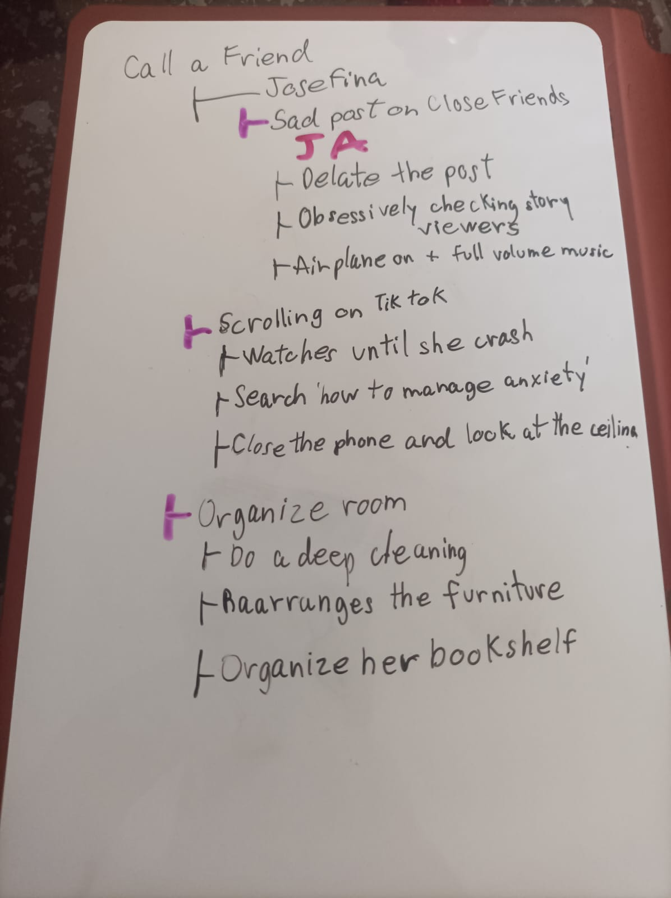
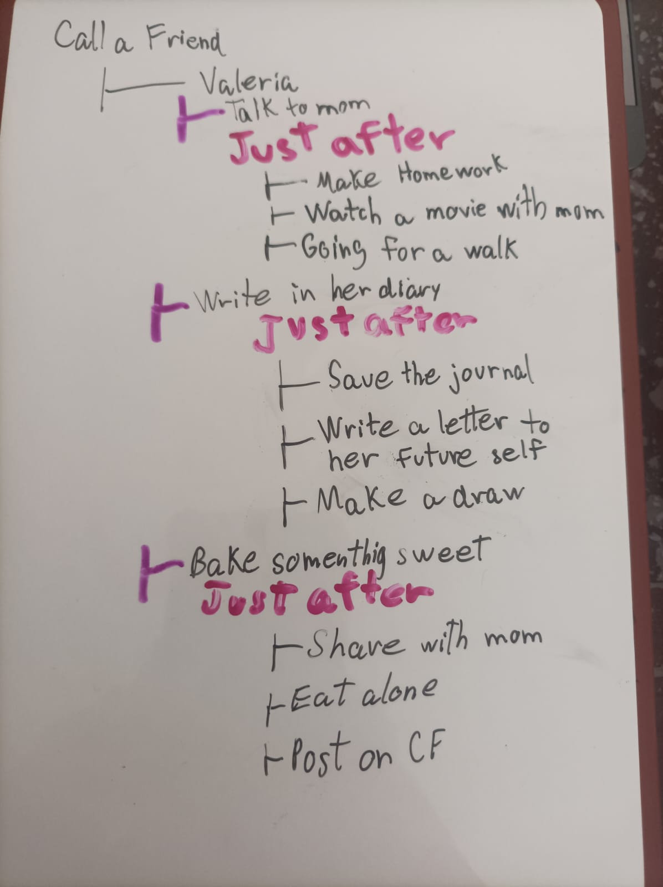
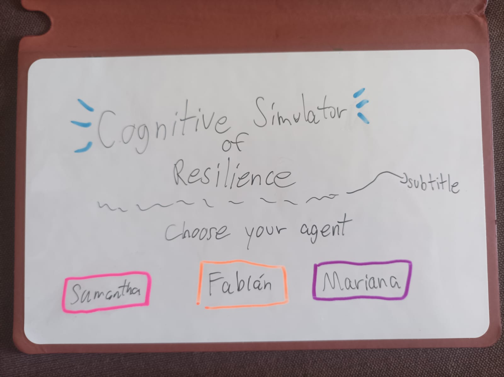
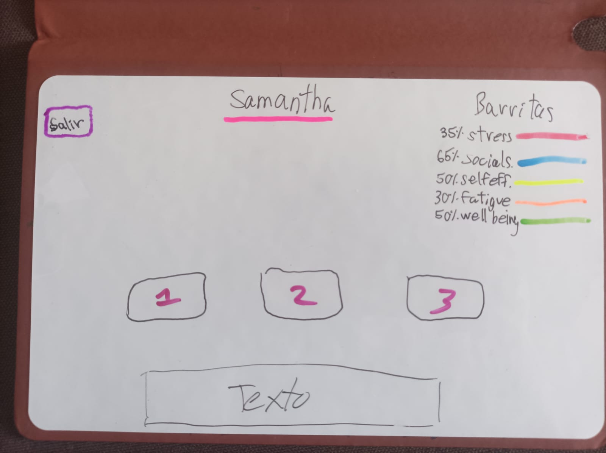
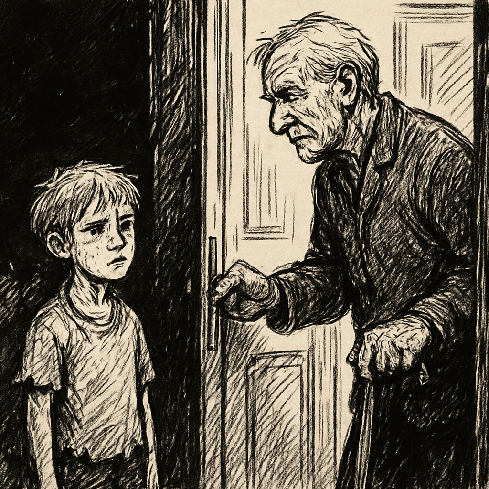

Her mom just told her she can't go on the school trip. Her friends are already packing.
Post a crying selfie on Close Friends
Lie to her mom and say she's staying at a friend's house
Cognitive Simulator: Resilience & Adaptation
An interactive simulator exploring how people respond to stress, adversity, and life-changing decisions.
Endings unlocked: 0 / 4
Choose your agent
Fabián (27)
He just got fired from the job he thought was his career. The apartment is too quiet.
Consider taking more medication than prescribed
Text his ex-girlfriend at 2 AM
Samantha
Samantha is excited about the upcoming school trip.
Learning Journal
A look into the creative, technical, and strategic process behind the simulator.
January 2, 2026 — The Origin
"My idea for my university portfolio: a cognitive-narrative behavior simulation project. A mod for The Sims 4 that models the cognitive impact of trauma in simulated agents with emergent narrative..."
March 17, 2026 — The Pivot
"After looking for tutorials on how to make mods for The Sims 4... I realized it was not going to be practical. I needed to look for another way to build my portfolio."
July 2026 — Defining the Variables
"I defined the five core bars of the agent. Stress: the thermometer of the problem. Social Support: the lifesaver. Self-Efficacy: the engine. Fatigue: the fuel. Well-being: the internal climate."
October 3, 2026 — My Little Online Guide
"My research process began with constant searches for cognitive science content on YouTube. Over time, the algorithm recommended the channel of Charlotte Fraza... Through her videos, I discovered Research Rabbit..."
Development Timeline
December 2025
Initial idea for a The Sims 4 mod.
March 2026
Pivot to web development.
September 2026
Samantha completed.
October 2026
Fabián completed. New engine integrated.
Initial Sketches
Before writing any code, I mapped out the decision trees on paper.






Creative Writing
This is an original magical realism short story I wrote in 2024. It explores grief, memory, and resilience in older adults, and was my first intuitive approach to cognitive science before I knew I wanted to study the human mind academically.
When the Butterflies Fly
Chapter 1: A Boy Behind the Bushes
"People say there is always time to start over. I tell them to shut up. They are all a bunch of delusional idiots who think the world is made of roses. I am too old to believe in those fantasy tales," Antonio thought as he walked back home after going to the market for a few things. When you live alone, you don't worry much about what you eat, just about surviving the process.
On his way home, he heard strange movements near him, but he thought he was hallucinating; perhaps he was just tired and those sounds were nothing. Antonio continued on his way and reached the porch of his house. As he searched for the keys in his pocket, he heard that sound again, and this time it was clearer: they were footsteps. Someone was following him. The old man grabbed his cane to defend himself from the villain who was trespassing on his property. He saw something moving behind some bushes, only to realize there was a boy hiding. He could see him thanks to the little one's loud orange hair.
"Hey, kid. Get out of there, I won't hurt you," spat the old man, lowering his cane.
The little boy came out of the bushes. He was wearing torn rags, as were his shoes. His freckled face stood out due to the cold, dead look in his eyes.
"What were you doing on my porch, young man?" questioned the old man, somewhat tired. He should be sleeping at this hour.
"And? Are you mute or just shy?"
"Excuse me..."
"Don't apologize. Tell me what you were doing there."
"I was just following a butterfly," the little one finally confessed.
"Butterflies? There are no butterflies around my house, kid. You are lying to me."
"No, I'm not lying, look," the boy pointed to a colorful butterfly flying towards the house next door. The old man was surprised, as he had only seen those flying nuisances, moths, for the last 30 years.
"Well, you were right... And your parents? They must be looking for you," the old man assumed.
"No, I... I am an orphan," the boy said coldly.
"Oh... me too, kid."
Then, the old man asked, calmer than the last time:
"And what is your name, young man?"
"Fergus..."
"What a strange name, Fergus," Antonio murmured, feeling a strange discomfort as he pronounced it.
After talking with the boy for a while longer, Antonio allowed him to stay with him, at least for that night. What he did not know was that, by opening the doors of his house to little Fergus, he was also letting in what he had buried for years in his heart.

Antonio meets Fergus outside his home.
Chapter 2: The Day I Lost Her
Suffering from some kind of pain was normal at Antonio's age, but that didn't make having back pain while walking down the stairs any easier. He had let Fergus sleep on the couch last night, he hoped the boy was still there and hadn't stolen anything.
"Kid! Where are you?" Antonio called out to him.
The little Scottish redhead appeared behind the old man, startling him; he felt as if his heart was going to jump out of his chest. Having a heart attack before his coffee was not in his plans for the day.
"For God's sake! Don't scare me like that, boy," Antonio complained, adjusting his robe.
"I'm sorry, sir," the boy replied reluctantly.
"You can stay around here, just don't touch anything," he said, while grabbing his cane to go to the kitchen and make some coffee.
A few calm and silent minutes passed until Antonio heard something made of glass or ceramic fall to the floor. He got up so fast he almost knocked over his coffee. When he reached Fergus, he saw the boy standing still, showing no reaction nor emotion. He looked at what had broken; it was a glass giraffe that he had always hated. His mother-in-law had given it to him and his wife never allowed him to get rid of it. In part, he was a little grateful to the boy for having destroyed it.
"I'm sorry, sir," Fergus murmured, with some regret.
"It doesn't matter, I didn't want that thing," he said disinterestedly, until he looked at what the little one was holding in his hands. "Give me that, boy," he demanded bluntly.
"Why? What is this?" Fergus asked curiously.
"It's none of your business, boy, give me that," the old man managed to touch the object, however, a strange sensation ran through him; his body weakened and trembled for no reason. His head suddenly hurt, although that was not the worst part, but rather that the object that had been between his hand and the boy's was no longer there. It was the last thing Antonio saw before fainting.
—————————————————
Upon waking up, Antonio saw the boy next to him, but the atmosphere felt different. Although they remained in his house, there was something unusual, yet familiar, as if he had lived through this before. It was hard to explain; not even the old man understood what was happening. Until the old man noticed some angry shouts approaching them. What he was seeing was impossible; it must be a dream or, rather, a nightmare.
"It's just an ornament, Antonio! A glass butterfly! Why do you have to make a scene about everything?" she spat, clutching the object angrily.
There she was before his eyes, the reason why he had been living in torment, in eternal suffering for years. His wife, Mercy.
"It is absolutely ridiculous, I don't want this in my house!" Antonio vociferated, throwing the paperweight. Unfortunately, his wife caught it before it hit the ground.
"What is your problem, Antonio?! You almost broke it," Mercy exclaimed as she placed the paperweight on the table.
"Always so dramatic, over a little glass butterfly," Antonio attacked. "Do you think I need more stupid things in this house other than you?"
And he continued releasing his anger:
"You are a nuisance, did you know that? You are too weird, you are always paying attention to anything else but me. God, I don't even know how I ended up with someone like you."
Mercy's eyes crystallized. She grabbed a coat, took the car keys, and left.
"I need some air," Mercy said.
Antonio just watched as his past self left the scene angrily, without looking at his wife leave. The old man felt something wet running down his cheeks. The boy looked at the old man worriedly and wrapped his small arms around him. Antonio returned the hug while wiping his tears. He wanted to get out of there; he didn't want to relive the death of his wife. He already knew his wife would die in an accident. He didn't want to relive that.
Chapter 3: Thank You, Fergus
Antonio wakes up in his armchair. The sun's rays slip through the window, the birds sing, and the butterflies flutter around the garden. The house no longer feels as gloomy as it did a few days ago.
The old man watches Fergus return from playing in the yard. Even though he is covered in dirt, he doesn't scold him. He is in a good mood today.
"Come here, boy."
Fergus approaches with little hops.
"Yes, sir? Is something wrong?" he asks politely.
"No, I just wanted to thank you. Although I still don't understand how you did what you did the other day, you truly helped me close that old wound. Thank you, Fergus," Antonio confessed.
"It was nothing, sir. I hope you can be at peace now."
"I am, kid, believe me, I am. And it is all thanks to you. You are a good boy," the old man strokes his orange locks with a soft smile adorning his face.
Antonio begins to feel sleepy. It is time for his nap. Fergus notices and goes to get a blanket to wrap him in.
"Here you go, sir," Fergus says as he covers him.
The old man nods. Fergus watches him in silence, resting in peace. Then he places the little paperweight on his chest and quietly withdraws.
As the old man drifts off to sleep, the last thing he sees are the butterflies flying. His wife had always liked them. There used to be a lot of them in the garden when she was alive. They disappeared after her death, as if they had gone with her.
But now they have returned. Perhaps they had a secret reason for coming back. And those butterflies, fluttering in the sunlight, made him feel as if his wife were near...
Perhaps now, at last, he could reunite with her.
Scientific References
Coutu, D. L. (2002). How resilience works. Harvard Business Review.
Frankl, V. E. (1946). Man's Search for Meaning.
Masten, A. S., & Tellegen, A. (2012). Resilience in developmental psychopathology.
Lupien, S. J., et al. (2009). Effects of stress throughout the lifespan...
Cohen, S., & Wills, T. A. (1985). Stress, social support, and the buffering hypothesis.
Koole, S. L. (2008). The psychology of emotion regulation.
Neenan, M. (2017). Attitude: The heart of resilience.